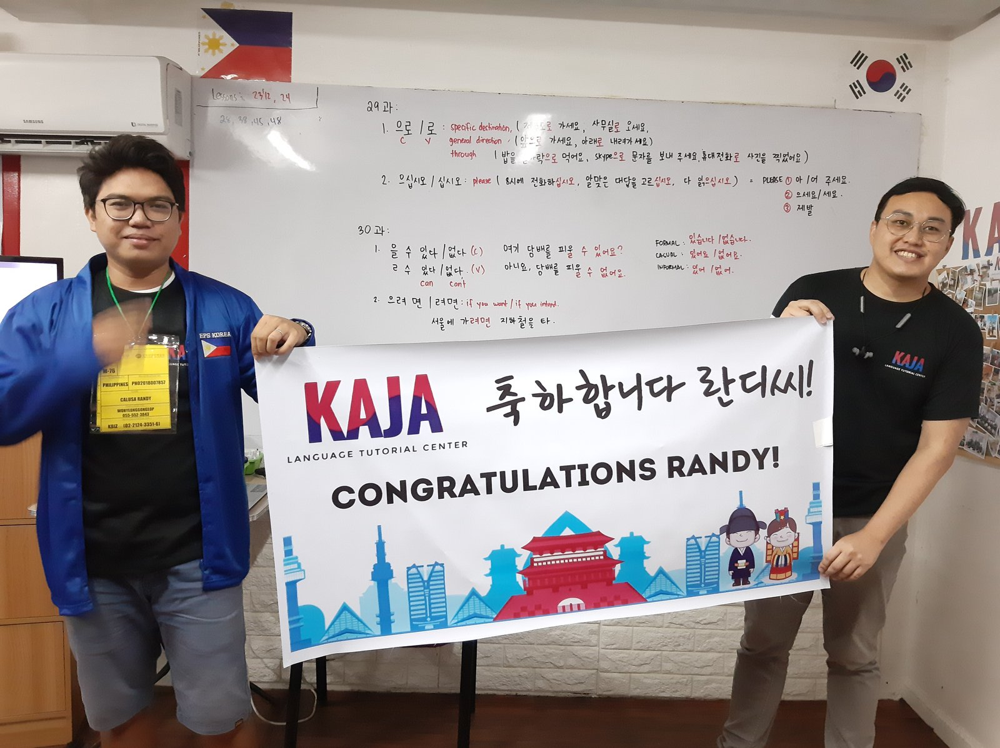
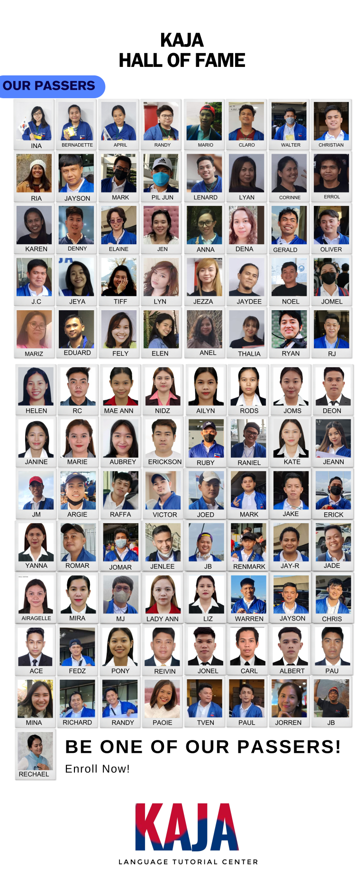

Your next chapter.
Starts with Kaja.
Learn Korean with people who care about your goals. From your first Hangul lesson to EPS-TOPIK preparation—tara, sabay tayo.

Big goals.
Personal guidance.
Start where you are. Build the Korean language skills you need, with a learning format that fits your life.
 In the classroom. On your screen.
In the classroom. On your screen.Korean, together in class.
Learn in person with guided lessons, practical exercises, and a community working toward the same goal.
- 80-hour comprehensive Korean class
- EPS-TOPIK review and mock exam practice
- Book 1 & 2 learning materials
- Skills tools and registration assistance
Practice here.
Walk in prepared.
A preview of your proposed student practice space. Study, try a question, and understand your answer—all in one website.
CBT & UBT practice
Reading and listening practice with exam-style controls and timed sessions.
More ways to prepare
Book 1 & 2 questions, graph practice, interview preparation, and skills videos.
A space for your students
Paid student access, email sign-in codes, and one active device at a time.
Reading · Graph question
가장 좋아하는 운동은 무엇입니까?
Read the chart and choose the most popular sport.
It’s more fun
with Kaja.
Learning a new language takes effort. A community makes the journey feel a little lighter.

Every passer has a story.
Celebrate the people who kept showing up, kept learning, and reached their next milestone.
View Kaja’s published passers ↗
A few things
you might ask.
Can beginners join?
Kaja offers Korean language classes for EPS and non-EPS learners. Contact the school to find the right starting point for you.
Can I study online?
Yes. Kaja’s published programs include online and face-to-face classes. Ask the school about its next available schedule.
Is this the actual student exam platform?
This is a working design preview with one sample question. Full exams, student accounts, listening practice, and results would be connected during the website project.
Does passing EPS-TOPIK guarantee a job?
No. Exam preparation supports your learning. Recruitment, selection, and employment follow the official EPS process.
Tara na.
Your Korean journey awaits.
Let’s find the class that feels right for you.
Come say 안녕하세요.
Visit us
2/F 108 National Highway
Tunasan, Muntinlupa City
Across SM Tunasan